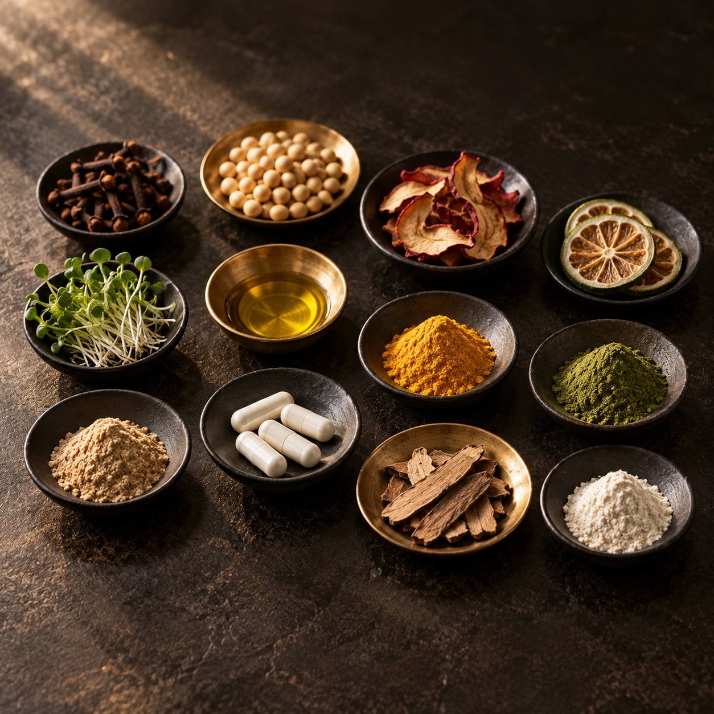
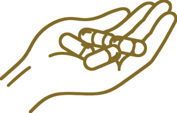
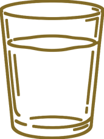
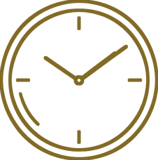

UROLITHIN
ウロリチン
原材料名：ザクロ抽出発酵物
ザクロやベリー類、ナッツなどに含まれるポリフェノール「エラグ酸」が、腸内細菌によって変換されてできる成分です。クロノ・アール カプセルには、ザクロ抽出発酵物として配合しています。
PRODUCT & INGREDIENTS
ウロリチン、スペルミジン、フィセチン、NAD原料成分。エイジングケアの分野で名前が挙がる成分をはじめ、30種以上の成分を1日1包にまとめたリバースエイジング サプリメントです。何が入っているのか、どう飲むのか、気をつけることは何か。購入の前に確かめておきたいことを、このページにまとめました。

OVERVIEW
クロノ・アール カプセル（CHRONO-R CAPSULES）は、リエール再生医療研究所が開発した栄養補助食品です。再生医療の研究で積み重ねられてきた知見に着目し、30種以上の成分を1包に配合しました。1日分は1包（4カプセル）。1箱に30包が入った、約30日分のインナーケア サプリメントです。
KEY INGREDIENTS
単体のサプリメントとしても販売されている成分を、クロノ・アール カプセルは1包にまとめています。
それぞれがどんな成分で、どの原材料として入っているのかを紹介します。
UROLITHIN
原材料名：ザクロ抽出発酵物
ザクロやベリー類、ナッツなどに含まれるポリフェノール「エラグ酸」が、腸内細菌によって変換されてできる成分です。クロノ・アール カプセルには、ザクロ抽出発酵物として配合しています。

SPERMIDINE
原材料名：小麦胚芽エキス末
小麦胚芽や大豆、納豆などの食品に含まれる、ポリアミンの一種です。小麦胚芽エキス末として配合しているほか、ポリアミンを含む大豆ペプチドもあわせて配合しています。

FISETIN
原材料名：フィセチン末
いちごやりんごなどに含まれる、フラボノイド（ポリフェノール）の一種です。セノリティクス研究で名前が挙がる成分のひとつで、フィセチン末として配合しています。

NIACINAMIDE
原材料名：ナイアシンアミド
ナイアシンアミドは、ビタミンB3（ナイアシン）の一種です。体内でNAD（ニコチンアミドアデニンジヌクレオチド）がつくられるときの材料になることから、成分表では「NAD原料成分」と記されています。

ANTHOCYANIN
原材料名：ビルベリーエキス末
ビルベリーやぶどうなどに含まれる、青紫色の天然の色素です。ポリフェノールの一種で、クロノ・アール カプセルにはビルベリーエキス末として配合しています。

RESVERATROL
原材料名：赤ワインエキス
ぶどうの皮や赤ワインなどに含まれる、ポリフェノールの一種です。クロノ・アール カプセルには、赤ワインエキスとして配合しています。
※成分についての一般的な説明です。商品の効果・効能を示すものではありません。
ALL INGREDIENTS
毎日口にするものだから、何が入っているのかを確かめてから選んでいただけるように。成分表に記載されている原材料を、記載の順にすべて掲載します。かっこの中は、その原材料に含まれる成分の名前です。

※食品アレルギーのある方は、原材料をご確認のうえ、ご使用をお控えください。
DESIGN
成分の数を増やすだけでなく、どう組み合わせ、どう形にするか。開発元のリエール再生医療研究所が、設計で大切にしている3つの考え方です。
成分の配合と設計の考え方に、独自の黄金比バランスを採用しています。複数の有用成分が互いに補い合い、全体として調和がとれるように組み立てました。
成分表にも記されている、開発元独自の製法です。ナノテクノロジーを応用し、有用成分を超微細なレベルで設計しています。
開発の土台にあるのは、再生医療の研究で積み重ねられてきた知見です。その知見を、毎日続けられるサプリメントという形に落とし込みました。
HOW TO TAKE
栄養補助食品として、1日1包（4カプセル）を目安にお召し上がりください。
STEP1

1包に4カプセル入り。1日分が1包ずつに分かれているので、数える手間がありません。
STEP2

コップ1杯ほどの水、またはぬるま湯と一緒にお召し上がりください。
STEP3

決まったタイミングはありません。毎日続けやすい時間に取り入れてください。
SAFETY
クロノ・アール カプセルは、毎日の習慣として続けていただくサプリメントです。だからこそ、原材料はすべてこのページで公開しています。お召し上がりの前に、ご使用上の注意と全成分の一覧をご確認ください。
製造は国内の工場で行い、品質検査を行っています。
PRICE
CHRONO-R CAPSULES
クロノ・アール カプセル
¥159,500（税込）